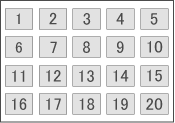

You can print an index of selected photos. An index print shows the thumbnails of the photos in one page. It is convenient for managing your photos.
To print an index, select Index from the layouts in the Layout/Print screen.
 Important
ImportantIndex cannot be printed if you select any of the following paper sizes.
- Credit Card
You can print up to 80 images on one page.
Refer to the following section for details on how to select photos.
Photos are arranged in the following order.
Example: Index (x20)

You can change the printing order in Printing Order on the Print tab of the Preferences dialog.
You can select the printing order from By Date, By Name, and By Selection.
To display the Preferences dialog, click  (Settings) or select Preferences... from the File menu.
(Settings) or select Preferences... from the File menu.